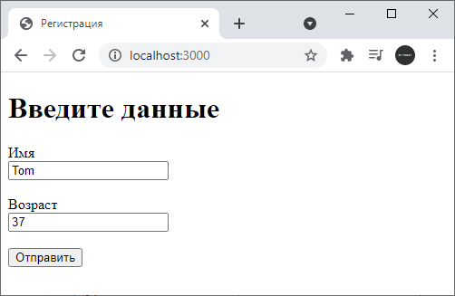
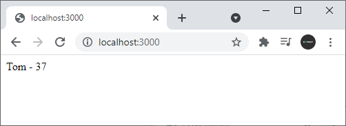

POST-запросы и отправка форм
При оправке каких-то сложных данных обычно используются формы. Рассмотрим, как получать отправленные данные в Express. Вначале определим в папке проекта новый файл index.html с формой ввода данных:
<!DOCTYPE
html>
<html>
<head>
<title>Регистрация</title>
<meta
charset="utf-8"
/>
</head>
<body>
<h1>Введите
данные</h1>
<form
method="post">
<label>Имя</label><br>
<input
type="text" name="userName"
/><br><br>
<label>Возраст</label><br>
<input
type="number" name="userAge"
/><br><br>
<input
type="submit" value="Отправить"
/>
</form>
</body>
</html>
Здесь определены два поля для ввода имени и возраста пользователя. В файле app.js определим следующий код:
const
express = require("express");
const app = express();
// создаем
парсер для данных application/x-www-form-urlencoded
const urlencodedParser =
express.urlencoded({extended: false});
app.get("/", function (request,
response) {
response.sendFile(__dirname + "/index.html");
});
app.post("/",
urlencodedParser, function (request, response) {
if(!request.body) return
response.sendStatus(400);
console.log(request.body);
response.send(`${request.body.userName} - ${request.body.userAge}`);
});
app.listen(3000, ()=>console.log("Сервер запущен..."));
Прежде всего для получения отправленных данных необходимо создать парсер: const urlencodedParser = express.urlencoded({extended: false});
Поскольку данные отправляются с помощью формы, то для
создания парсера применяется функция urlencoded(). В эту функцию передается
объект, устанавливающий параметры парсинга. Значение extended: false указывает,
что объект - результат парсинга будет представлять набор пар ключ-значение, а
каждое значение может быть представлено в виде строки или массива.
При
переходе по адресу "/" будет срабатывать метод app.get, который отправит
пользователю файл index.html.
Так как данные отправляются с помощью метода
POST, то для обработки определяем функцию app.post("/",...). Первый параметр
функции - адрес, на который идет отправка - "/". В коде формы в файле index.html
мы не указали адрес для отправки, поэтому по умолчанию данные будут отправляться
по тому же адресу, по которому доступна веб-страница index.html - "/". Таким
образом, с одним адресом "/" связаны две функции, только одна обрабатывает
запросы get, а другая - запросы post. Второй параметр - выше созданный парсер.
Третий параметр - обработчик:
app.post("/",
urlencodedParser, function (request, response) {
if(!request.body) return
response.sendStatus(400);
console.log(request.body);
response.send(`${request.body.userName} - ${request.body.userAge}`);
});
Для получения самих отправленных данных используем
выражения типа request.body.userName, где request.body инкапсулирует данные
формы, а userName - ключ данных, который соответствует значению атрибута name
поля ввода на html-странице: input type="text" name = "userName"
Запустим
приложение и обратимся к странице index.html:

После отправки введенные данные будут получены в функции app.post("/",...), которая выведет результат обработки:

Назад: Статические файлы | Далее: Router
get
delete
sent